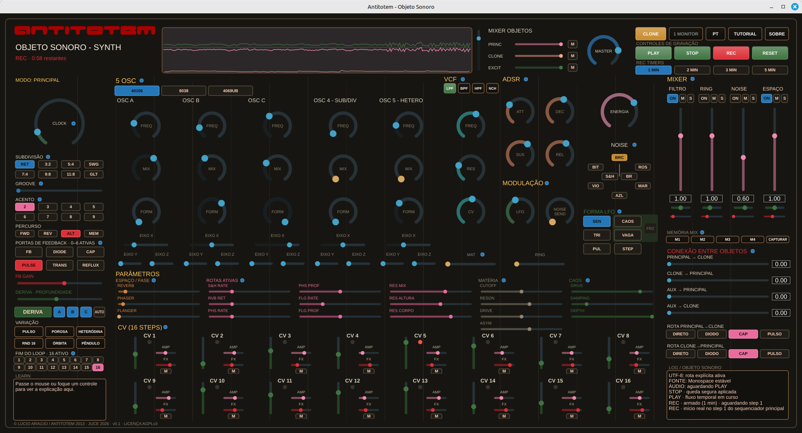

Concept
Antitotem is a standalone sound instrument, available to download and use to compose, perform, and record music — five oscillators, a sequencer, filter, effects, and audio/MIDI/MusicXML capture in one object. Its current form deliberately keeps the elements of its origin: it began as a street installation of dedicated consoles, and it carries in its DNA a knowledge rooted in hand-built electronics.
The instrument today
Antitotem is a standalone JUCE/C++20 instrument, meant to run on any computer — available
for Linux (a .deb package), Windows (an .exe installer) and macOS
(a .dmg), plus building from source. It's not a plugin and doesn't depend on a
DAW: it opens, sounds, and records on its own.
You can compose a whole piece with it: five oscillators (continuous, divided sub/clock, and heterodyne), a 16-step scanner, ADSR, multimode VCF, noise and sample & hold, feedback sends (reverb/phaser/flanger/resonator), a mixer with memory, generative drift, a permanent L/R oscilloscope, and direct recording to WAV, MIDI, and MusicXML — the piece comes out ready to listen back to, edit in a DAW, or open as a score.

Characteristics
Four traits defined the 2012-2013 street consoles. They weren't replaced — they feed the concept of the new sound object, translated into an instrument that fits on a laptop instead of a street cabinet.
Urban sound object
"Five distinct sonic objects, distributed through the flows of the city, not on a closed stage."
Today: still a self-contained sound object, not a plugin — it opens and sounds right away, records its own output, and doesn't depend on a host or a DAW to exist.
Perception of space
"Suggests other paths, signals its surroundings, activates perception about the materiality of the inhabited or travelled place."
Today: DRIFT moves parameters on its own within designed bounds — never blind randomness — and the SPACE chain treats width and pan as a place to move through, not a fixed effect.
Presence and absence
"Establishes presence through sound, fills gaps, makes absence evident — creates dialogue rather than just emitting signal."
Today: a permanent L/R oscilloscope on screen and a mixer with inter-object connection — the instrument always shows what's really sounding, not just what was programmed.
Reinvented technology
"Reinvents technologies that enable interactivity and expand spatio-temporal dynamics, not off-the-shelf technology."
Today: the character of the original CMOS/discrete chips (40106, 8038, 4069UB) was rewritten in code — not emulation, a reinvention of the same impulse, now as free software anyone can download and play.
DNA — where it comes from
Antitotem began as a sound-art work for the urban space of Curitiba — dedicated electronic consoles, installed at strategic points across the city, not a studio instrument.
-
2012
Selected in the digital art research and production call nº 090/12 by the Fundação Cultural de Curitiba (Curitiba Cultural Foundation), supported by the Curitiba Municipal Government and the Municipal Culture Fund.
-
2013
Five authorial, modular, CMOS/discrete hardware consoles were built, each installed at a different point in the city — with an exhibition, a workshop, and video documentation of the immersions.
-
2026
New phase: a digital instrument (this repository), inspired by the original consoles' material practice, without replacing or moving the historical archive — now aimed at personal music-making, not an urban installation.
“Through electronic instruments and their sound signals, Antitotem provides sensory experiences that expand our perception of the space we live in or move through. It suggests other paths, tensions routes, signals its surroundings, activates perception, creates dialogues, establishes presence, fills gaps, makes absence evident.”
Original 2012-2013 project manifesto (translated from Portuguese), antitotem.arquiviagem.net
The original project site, with the exhibition, the workshop, and the records of the immersions across the city, remains online at antitotem.arquiviagem.net.
Credits
Lúcio Araújo — concept, DSP, interface and all of this prototype's code. Built on the JUCE framework (dual-licensed AGPLv3/commercial dependency; this project uses the AGPLv3 path), under the AGPLv3 license (see LICENSE). Research schematics and images cited in the full list keep their own rights and are not distributed with this repository — see the full list of sources and technical references.
Contact
Lúcio Araújo — authorship and development.